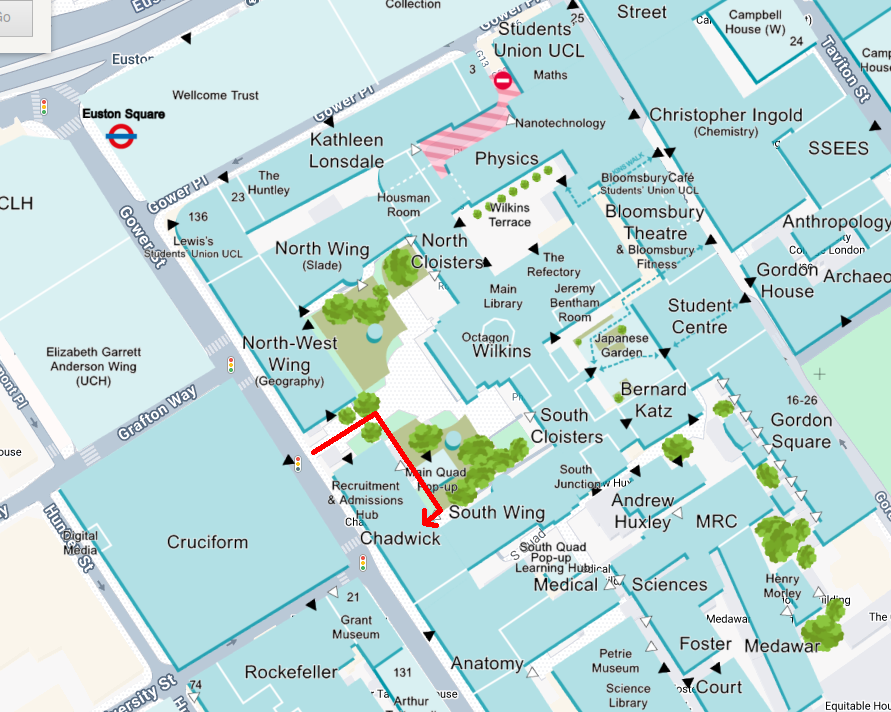

15th Meeting of the Southern and Midlands Logic Seminar, UCL, London
The 15th meeting of the Southern and Midlands Logic Seminar will be held on the afternoon of Wednesday 24 June at University College London.

Participants are encouraged to join the SMLS community on Discord, which is used for announcements and coordination. Please contact one of the SMLS organisers to be added.
The meeting is supported by a London Mathematical Society Joint Research Groups grant.
Location
The seminar will take place in room G08 of the Chadwick Building, UCL main campus, Gower Street, London WC1E 6BT. Note that the correct entrance is behind the building, towards South Wing, as shown on the map below:

Programme
- 12:00–13:00 Lunch served at the venue
- 13:00–13:45 Ralph Sarkis (UCL): Quantitative Diagrammatic Axiomatisation of Relative Entropy
- 13:45–14:15 Coffee and discussion
- 14:15–14:45 Katya Piotrovskaya (UCL): From Phase Semantics to Base-extension Semantics (and back)
- 14:45–15:15 Madhumitha Krishnakumar (Queen Mary): Counting Small Subhypergraphs
- 15:15–15:45 Paaras Padhiar (Birmingham): Second-order intuitionistic tense logic
- 15:45–16:15 Coffee and discussion
- 16:15–16:45 David Gao (Oxford): Graphical Algebraic Geometry: From Ideals and Varieties to Quantum Calculi
- 16:45–17:15 Marc Thatcher (Sussex): The Problem of Observable Value in Interaction Nets
Travel bursaries
The seminar has a budget to cover travel costs for speakers and participants. The instructions on how to claim travel expenses will be sent out after the seminar.
Abstracts
"Quantitative Diagrammatic Axiomatisation of Relative Entropy" Ralph Sarkis, UCL
Relative entropy is a fundamental class of distances between probability distributions with widespread applications in probability theory, statistics, and machine learning. Following recent work of Paolo Perrone, we study relative entropy from a categorical perspective, viewing it as an enrichment of the category of stochastic matrices. We provide diagrammatic theories that axiomatise this category with three different enrichment with the Kullback--Leibler divergence, the more general Rényi divergence, and the Jensen--Shannon divergence. Our results are formulated within the framework of quantitative monoidal algebra, using a graphical language of string diagrams enriched with quantitative equations.
"From Phase Semantics to Base-extension Semantics (and back)" Katya Piotrovskaya, UCL
Linear logic admits a wide range of semantic presentations. One well-known example is phase semantics: an algebraic semantics in which formulas are interpreted in phase spaces, consisting of a commutative monoid and a fixed subset, with respect to which an orthogonality relation is defined. A rather different and much more recent approach is given by base-extension semantics, which defines validity by inductively extending a provability relation on a base -- a set of inference rules over atomic propositions. In this talk, we establish an equivalence between the two semantics by first defining bidirectional maps between bases and phase spaces, and then constructing an isomorphism between a phase space (resp. base) and its image under the composition of these maps.
"Counting Small Subhypergraphs" Madhumitha Krishnakumar, Queen Mary
Counting subgraphs has long been a fundamental problem that has received significant attention in theoretical computer science and mathematics. It has numerous applications, including the analysis of gene regulatory networks, biological networks, and the evolution of cancerous tumours. This talk introduces the framework developed by Radu Curticapean, Holger Dell, and Dániel Marx, which uses graph homomorphism counts to compute the number of small subgraphs present in a larger graph. The main ideas of this approach are then extended to the higher-dimensional problem of counting of small sub-hypergraphs.
"Second-order intuitionistic tense logic" Paaras Padhiar, Birmingham
We develop a second-order extension of intuitionistic modal logic, allowing quantification over propositions, both syntactically and semantically. A key feature of second-order logic is its capacity to define positive connectives from the negative fragment. Duly we are able to recover the diamond (and its associated theory) using only boxes, as long as we include both forward and backward modalities ('tense' modalities). We propose axiomatic, proof theoretic and model theoretic definitions of 'second-order intuitionistic tense logic', and ultimately prove that they all coincide.
"Graphical Algebraic Geometry: From Ideals and Varieties to Quantum Calculi" David Gao, Oxford
We introduce Graphical Algebraic Geometry (GAG), a family of diagrammatic languages extending the Graphical Linear Algebra programme. We construct several languages within this family and prove that they are universal and complete for the corresponding (co)span semantics of commutative algebras and affine varieties. This framework provides clear graphical representations of algebraic structures -- such as polynomials, ideals, and varieties -- enabling intuitive yet rigorous diagrammatic reasoning. We showcase two practical viewpoints on GAG. First, we show that instances of counting constraint satisfaction problem (#CSP) are recast as rewrite problems of closed diagrams in GAG. This means that deciding rewritability in GAG is #P-hard, and GAG can be viewed as a complete and compositional rewrite system for networks of polynomial constraints. Second, we characterize the qudit ZH calculus, a diagrammatic language for quantum computation, as an extension of Graphical Algebraic Geometry. This establishes the correspondence that Graphical Algebraic Geometry is to the ZH calculus what Graphical Linear Algebra is to the ZX calculus. Using this construction, we show that computing amplitudes in qudit ZH requires only a constant number of queries to a GAG oracle.
"The Problem of Observable Value in Interaction Nets" Marc Thatcher, Sussex
Interaction nets are a model of asynchronous parallel computation based on Multiplicative Linear Logic's proof structures. It is reasonable, therefore, to treat them as a form of parallel programming language. However they lack a notion of observable value: inaccessible values are valid results whereas streams are not. We therefore introduce function-constructor nets, a Turing-complete subset of interaction nets which distinguishes computation from data and provide an alternative co-inductive definition of "result" which distinguishes productive from non-productive nets.
Organisers
- Fredrik Dahlqvist (Queen Mary)
- Anupam Das (Birmingham)
- Thomas Powell (Bath)
- Giulio Guerrieri (Sussex)
- Fabio Zanasi (UCL)
Local Organiser